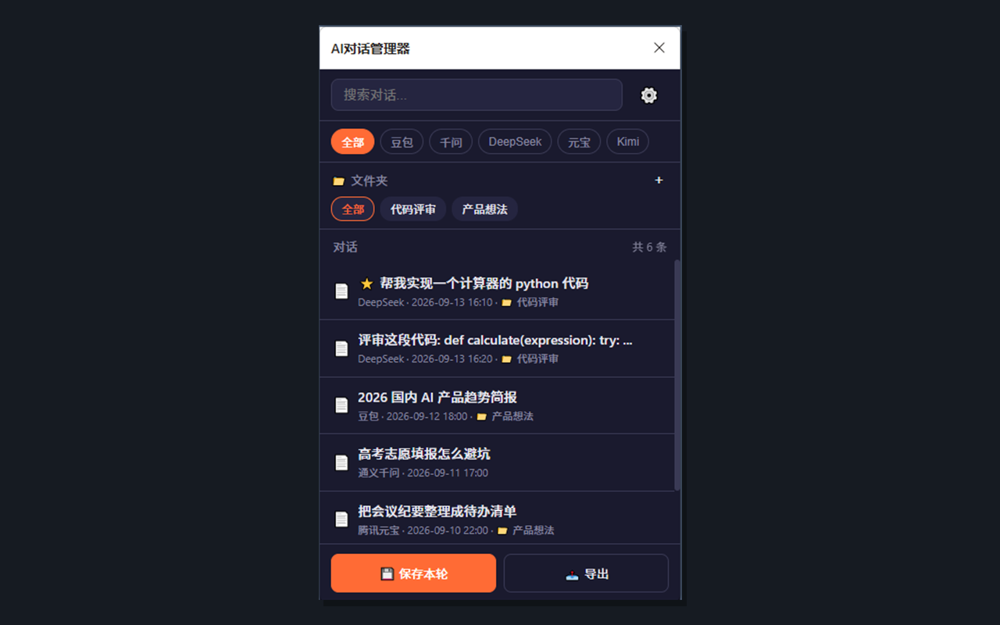
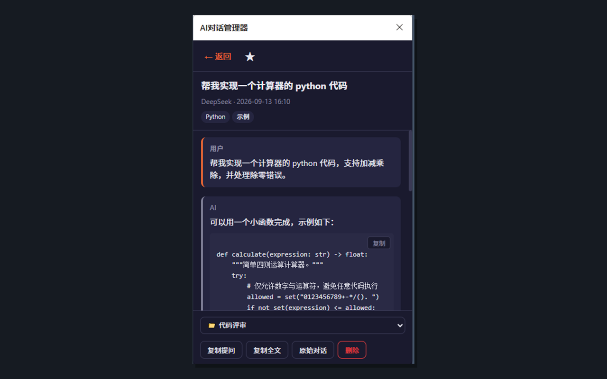
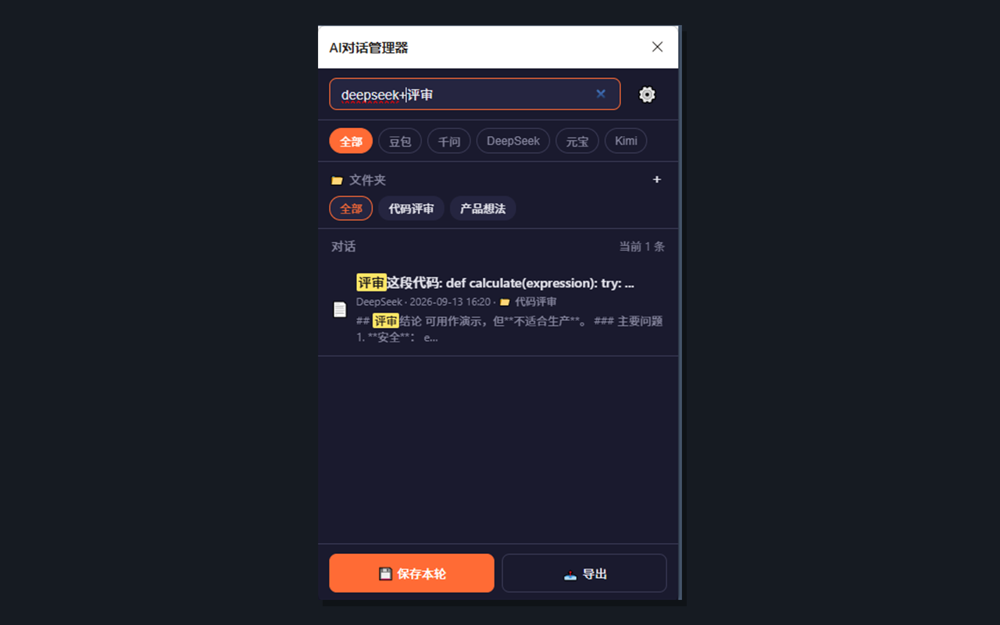

手滑刷新、来回切换豆包 / 千问 / DeepSeek……对话不再散落各站。本地保存，可搜索、可导出，不上传到开发者服务器。支持 Edge（商店安装）与 Chrome（加载扩展文件夹）。
chrome://extensions/，开启右上角「开发者模式」manifest.json）小红书 / 微信等渠道：Edge 用户写搜「AI对话管理器」；Chrome 用户写「GitHub 搜 SantoCc/ai-chat-manager，开发者模式加载文件夹」。


